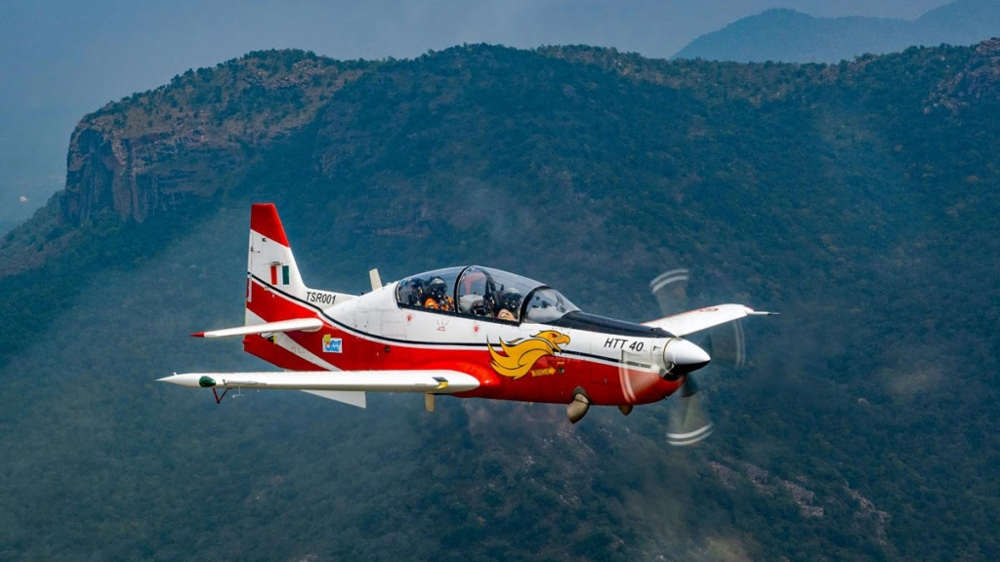
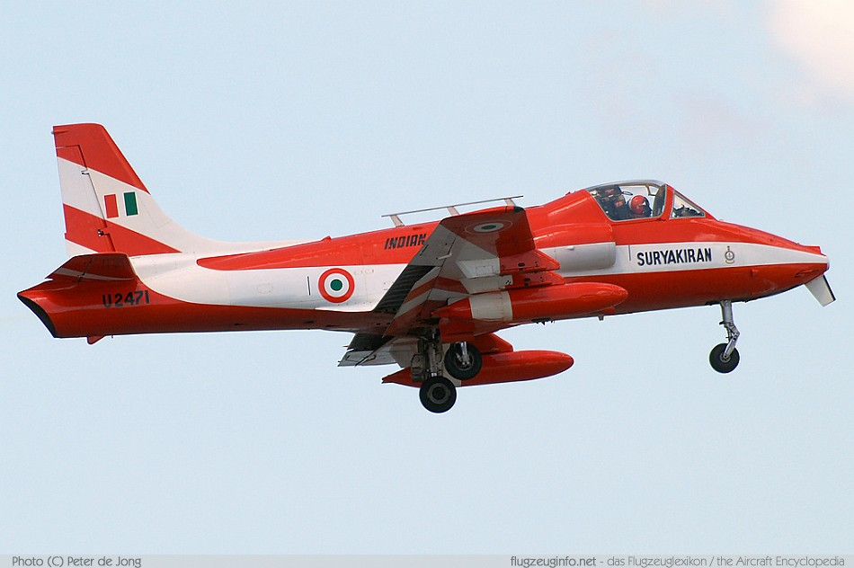
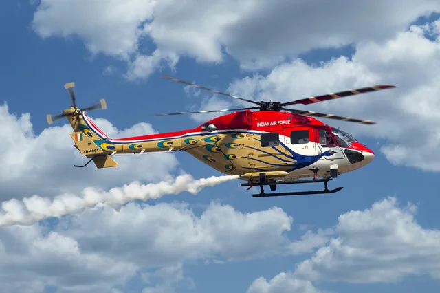

|
HAL Tejas is aIndia's primary indigenously built fighter for the Air Force is the HAL Tejas, a 4.5-gen multi-role jet, with recent focus on the Tejas Mk-1A variant, alongside older indigenous designs like the HF-24 Marut and trainer HT-2, as the Indian Air Force (IAF) seeks self-reliance and fills fleet gaps |
|---|---|
|  |
The HAL HTT-40(Hindustan Turbo Trainer-40) is India's indigenous basic trainer aircraft, designed by Hindustan Aeronautics Limited (HAL) for the Indian Air Force (IAF) to fulfill primary flying training needs, featuring a tandem seat, turboprop engine, modern glass cockpit, and capabilities for night flying, making it a key part of India's defense self-reliance |
|  |
HAL HJT-16 KiranThe HAL HJT-16 Kiran is India's pioneering indigenous two-seat, intermediate jet trainer, designed and built by Hindustan Aeronautics Limited (HAL) (HAL) for the Indian Air Force (IAF), serving since the late 1960s for Stage-II pilot training, enabling self-reliance in military aviation and paving the way for more advanced trainers like the HJT-36 Yashas. |
|  |
HAL Dhruvs a utility helicopter designed and developed by Hindustan Aeronautics Limited (HAL) in November 1984. The helicopter first flew in 1992; though its development was prolonged due to multiple factors including the Indian Army's requirement for design changes, budget restrictions, and sanctions placed on India following the 1998 Pokhran-II nuclear tests. |
 |
Advanced Medium Combat Aircraft (AMCA) is India's ambitious fifth-generation stealth fighter program, aiming to develop a twin-engine, multirole jet with advanced features like AESA radar, internal weapons bays, and superior maneuverability for the Indian Air Force (IAF) by the mid-2030s, with variants planned, including Mk1 (GE engines) and Mk2 (indigenous engine), costing billions and involving major Indian defense firms like HAL, Tata, and Adani. |